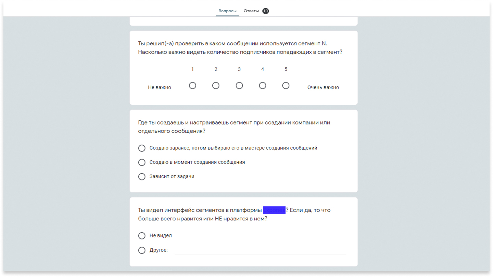
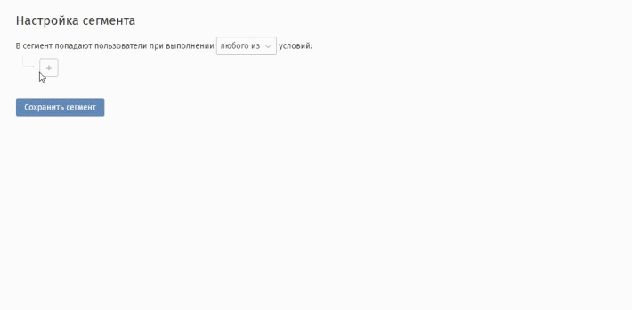
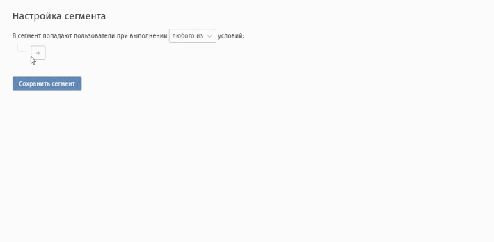
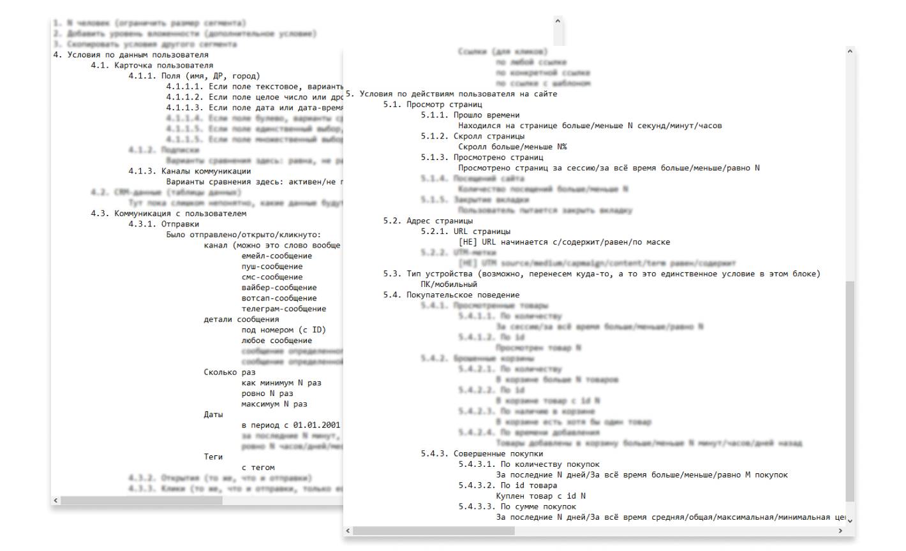
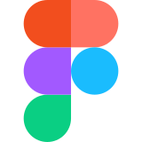

.jpg)
Сегментация контактов
Составление текстов ко всем условиям сегментов. Проектирование логики добавления, изменения и взаимодействия условий. Дизайн других страниц, которые взаимодействуют с сегментами.
Небольшое введение
Платформа enKod и ее сервисы расчитаны для b2b клиентов. Основная аудитория – маркетологи на стороне клиента и менеджеры с нашей стороны, которые помогают клиентам в технических вопросах платформы. На эти две группы пользователей я ориентировался при решении данной задачи.
Задача и цели
У маркетолога есть задача отсегментировать базу клиентов по некоторым свойствам (в платформе они называются“условия”), для дальнейшей работы с этим сегментом клиентов. Например: отправить рассылку всем контактам, кто подходит под условия сегмента, или добавить новые данные в карточку клиента.
Условия различаются в зависимости от данных пользователя, поведению на сайте или покупательской активности. Их можно комбинировать и объединять в группы. Поэтому основной задачей было сделать функционал сегментов понятным для обеих групп пользователей, но прежде всего для менеджеров на стороне клиента.
Бизнес задача
Каждый из сервисов платформы может иметь сегменты, которые работают только с объектами этого сервиса (например: попапы). У клиента может быть куплен только один из сервисов, поэтом нужно учесть в интерфейсе эти ограничения.
Задача на дизайн
Функционал должен быть достаточно гибок, чтобы пользователь мог быстро менять условия сегмента, комбинировать, объединять и не терять контекст при дальнейшей работе с ними.
Критерий успеха
Маркетологи, без помощи менеджера на нашей стороне, могут составить нужный сегмент и дальше работать с ним в платформе. Обратную связь, насколько получилось добиться этой цели, мы получим так же от наших менеджеров.
Дизайн-процесс
1. Опрос менеджеров
У менеджеров, на нашей стороне и стороне клиента, уже был опыт работы с сегментами в других платформах. Поэтому я составил небольшой опрос в google forms, в котором посторался узнать про опыт работы с сегментами. Что бесит, а что прям вау. Получив ответы, я составил перечень “хотелок” и барьеров, которые есть в других платформах.

часть опроса менеджеров из google forms
2. Семантика условий
Пржде чем начать проектировать интерфейс, я постарался правильно сформулировать условие. Большенство маркетологов гумманитарии, поэтому для начал формулируем задачу без привязки к интерфейсу.
 На gif показан интерфейс до редизайна с новыми компонентами

4. Дизайн
После проектирования всех условий и их взаимодействия, я приступил к визуальной части задачи. Помимо создания сегмента, я отрисовал экраны с табличным списком всех условий, экран с редактированием и деталями сегмента.
На gif показан интерфейс до редизайна с новыми компонентами

4. Дизайн
После проектирования всех условий и их взаимодействия, я приступил к визуальной части задачи. Помимо создания сегмента, я отрисовал экраны с табличным списком всех условий, экран с редактированием и деталями сегмента.
Хочу выбрать всех пользователей
При составлении сценариев, я сформулировал несколько закономерностей. Каждое из условий содержит параметр, который мы можем изменить, а сами условия можем объединить в группы по похожим параметрам.
- Из Рязани
- У которых в корзине больше 4 товаров
- Которые смотрели текущую страницу на сайте больше 50 секунд
Хочу выбрать всех пользователей
По итогу мы составили config-файл с перечнем всех возможных условий, сгруппированый по похожим признакам и принадлежности к тому или иному сервису. Для их комбинирования мы решили добавить дополнительное условие, которое аналагично логическим операторам И, ИЛИ.

config-файл с перечнем всех возможных условий
3. Построение условий
На этом этапе я продумал логику добавления условия и изменения его параметров. При выводите в дробдаун целого условия, без какой-либо группировки, пользователю будет сложно найти и его параметры. Поэтому был составлен ряд правил:
- Пол [женский]
- У которых в корзине [меньше] [2] товаров
- Которые [были на сайте] [меньше] [3] [минут]
- При добавлении условия в сегмент, пользователь не видет его целиком;
- Добавить вложенность для понимания контекста условий (multiselect menu);
- Каждый пункт multiselect menu соответствует параметру, который можно изменить.
На gif показан интерфейс до редизайна с новыми компонентами

Все макеты можно посмотреть в фигме по этой ссылке
© 1995–2020, Федосеев Никита